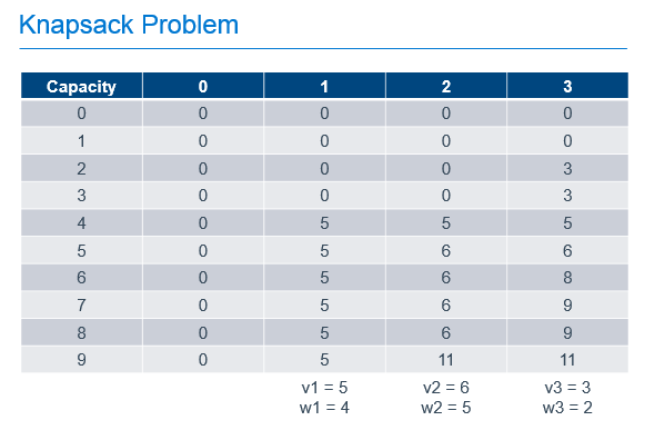
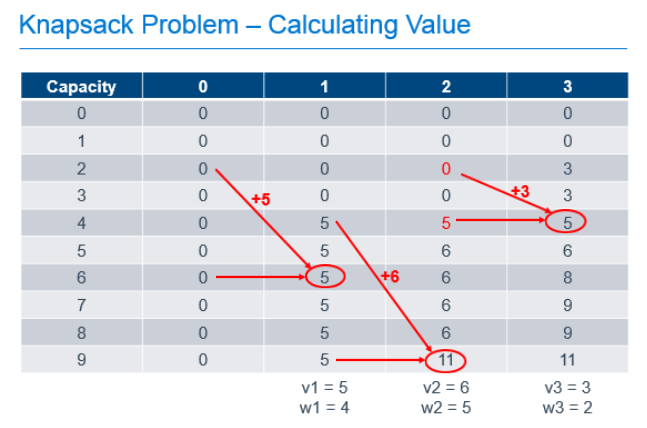
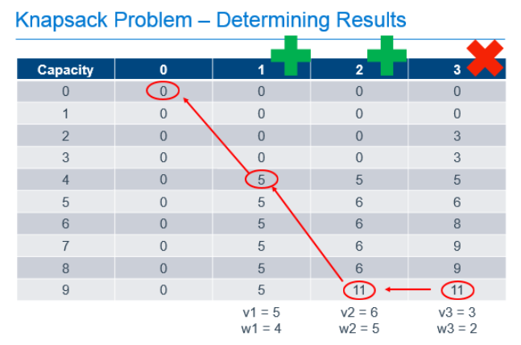

Tag: skill
Optimization for Developers
Posted by bsstahl on 2016-10-15 and Filed Under: development
The slide deck for my presentation on Optimization for Developers (A Developer’s Guide to Finding Optimal Solutions) can be found here. I hope that if you attended one of my code camp sessions on the topic, you enjoyed it and found it valuable. I am happy to accept any feedback via @bsstahl.
Tags: ai algorithms development dynamic skill math optimization
A Software Developer's View of Dynamic Programming
Posted by bsstahl on 2016-07-01 and Filed Under: development
Dynamic Programming (DP) is a mathematical tool that can be used to efficiently solve certain types of problems and is a must-have in any software developer's toolbox. A lot has been written about this process from a mathematician's perspective but there are very few resources out there to help software developers who want to implement this technique in code. In this article and the companion conference talk "Dynamic Optimization - One Algorithm All Programmers Should Know", I attempt to demystify this simple tool so that developer's can implement it for their customers.
What is Combinatorial Optimization?
Mathematical or Combinatorial Optimization is the process of finding the best available solution to a problem by minimizing or eliminating undesirable factors and maximizing desirable ones. For example, we might want to find the best path through a graph that represents the roads and intersections of our city. In this case, we might want to minimize the distance travelled, or the estimated amount of time it will take to travel that distance. Other examples of optimization problems include determining the best utilization of a machine or device, optimal assignment of scarce resources, and a spell-checker determining the most likely word being misspelled.
We want to make sure that we do not conflate combinatorial optimization with code optimization. It is certainly important to have efficient code when running an optimization algorithm, however there are very different techniques for optimizing code than for optimizing the solution to a problem. Code optimization has to do with the efficiency of the implementation whereas combinatorial optimization deals with the efficiency of the algorithm itself. Efficiency in both areas will be critical for solving problems in large domains.
What is Dynamic Programming?
Ultimately, DP is just a process, a methodology for solving optimization problems that can be defined recursively 1. It is really about a way of attacking a problem that, if it were addressed naïvely, might not produce the best possible answer, or might not even converge to a solution in an acceptable amount of time. Dynamic Programming provides a logical approach to these types of problems through a 2-step process that has the effect of breaking the problem into smaller sub-problems and solving each sub-problem only once, caching the results for later use 2.
The steps in the process are as follows:
- Fill out the cache by determining the value of each sub-problem, building each answer based on the value of the previous answers
- Use the values in the cache to answer questions about the problem
Since we fill-out the entire cache for each problem 3, we can be 100% certain that we know what the best possible answers to the questions are because we have explored all possibilities.
Dynamic Programming in Action
Let's look at one of the canonical types of problems that can be solved using Dynamic Programming, the knapsack problem. A knapsack problem occurs in any situation where you have a limited capacity that can be consumed by a number of different possible options. We need to look for the best fit and optimize for the maximum based on the definition of value in our problem. This class of problem gets its name from the story of the archeologist in the collapsing ruin. She has a knapsack that can hold a known weight without tearing and she needs to use it to rescue artifacts from the ruin before it collapses entirely. She wants to maximize the value of artifacts she can save, without exceeding the capacity of her knapsack, because it would then tear and she wouldn't be able to carry anything.
We can solve this type of problem using Dynamic Programming by filling-out a table that holds possible capacities, from 0 to the capacity of our known knapsack, and each of the possible items to use to fill that space, as shown below.

In this example, there are 3 items with weights of 4, 5 and 2. These items have values of 5, 6 and 3 respectively and can be placed in a knapsack with capacity of 9. The leftmost column of the table represents the capacities of knapsacks from 0, up to and including the capacity of our knapsack. The next column represents the best value we would get in the knapsack if we had the option of putting 0 items in our knapsack. The next, the best value if we had the option of taking the 1st item, the next column, the option to take the 2nd item on top of any previous items, and so forth until we complete the table. As you can see, the most value we can get in our knapsack with the option of picking from these 3 items is 11, as found in the last row of the last column. That is, the cell that represents a knapsack with our known capacity, with the option to chose from all of the items.
To calculate each of these cells, we build on the values calculated earlier in the process. For the 1st column, it is easy. If we can chose no items, the value of the items in our knapsack is always 0. The rest of the cells are calculated by determining the greater of the following 2 values:
- The value if we didn't take the current item, which is always the value of the same capacity knapsack from the previous column
- The value if we took the current item, which is the value of the current item, added to the value of the knapsack from the previous column if the weight of the current item were removed
So, for the cell in the column labeled "1" with a knapsack capacity of 6, we take the greater of:
- 0, since we wouldn't have any items in the knapsack if we chose not to take the item
- 5, the value of the current item, added to the value of the other items in the knapsack, which was previously empty
For the cell in column "2" with a knapsack capacity of 9, we take the greater of:
- 5, which is the value of the knapsack with capacity 9 from column "1" indicating that we didn't take the 2nd item
- 11, which is the value of the current item added to the best value of the knapsack with capacity 4 (subtract the weight of our current item from the capacity of the current knapsack) with the option of taking only the previous items.
Each cell in the table can be filled out by doing these simple calculations, 1 addition and 1 comparison, using the values previously calculated as shown in the annotated table below.

So we've filled out the table and know, from the cell in the bottom right that the maximum value we can get from this knapsack with these items is 11. Great, but that only answers the question of maximum value, it doesn't tell us which items are chosen to achieve this value. To determine that, we need to work backward from the known best value.
Starting at the known best value in the bottom-right cell, we can look one cell to the left to see that the value there is the same. Since we know that taking an item would increase the value of the knapsack, we can know that we must not have chosen to take the item in the last column. We can then repeat the process from there. From the bottom cell in the column labeled "2", we can look left and see that the value in the previous column did change, so we know we need to take the item in column "2" to get our maximum value. Since we know that item 2 had a weight of 5, we can subtract that from the capacity of our knapsack, and continue the process from that point, knowing that we now only have 4 more units of capacity to work with. Comparing the item in the column labeled "1" and a knapsack capacity of 4 with the value of the equivalent knapsack in column "0", we can see that we need to include item 1 in our knapsack to get the optimum result.

What did we actually do here?
There is no magic here. All we did was take a problem that we could describe in a recursive way, and implement a process that used easy calculations that built upon the results of previous calculations, to fill-out a data cache that allowed us to answer the two primary questions of this problem:
- What is the maximum value of the knapsack with capacity 9 and the option to take the 3 previously described items up to the capacity of the knapsack?
- Which items of the 3 do we need to take to achieve the maximum value described in question
You can probably see that if both axes of this table, the capacity of the knapsack, and the number of items we can chose from, are extremely large, we may run into memory or processing-time constraints when implementing this solutions. As a result, this may not be the best methodology for solving problems where both the capacity of the knapsack and the number of items is extremely high. However, if either is a reasonable number, Dynamic Programming can produce a result that is guaranteed to be the optimum solution, in a reasonable amount of time.
Continue the Conversation
I am happy to answer questions or discuss this further. Ping me @bsstahl with your comments or questions. I'd love to hear from you. I am also available to deliver a talk to your conference or user group on this or other topics. You can contact me here.
Footnotes
In mathematical terms, DP is useful for solving problems that exhibit the characteristics of Overlapping Subproblems and Optimal Substructure. If a problem is able to be described recursively, it will usually exhibit these traits, but the use of the recursion concept here is a generalization to put the problem in software developer's terms.
The process of storing a value for later use is known in mathematics as memoization, an operation which, for all intents and purposes, is equivalent to caching.
Variants of certain DP algorithms exist where the process can be cut-off under certain conditions prior to fully populating the cache. These variants are not discussed here.
Tags: ai algorithms development dynamic skill math optimization
Dynamic Optimization Presentation
Posted by bsstahl on 2015-10-21 and Filed Under: event
I hope you’ve had an opportunity to see my presentation, “Dynamic Optimization – One Technique all Programmers Should Know” at a Code Camp or User Group near you. If so, and you want to have a copy of the slide deck for your very own, you can see it embedded below, or use the direct link to the Powerpoint here.
The subject of this presentation is using a technique called Dynamic Programming to solve problems that have more than one possible solution. This technique works very well when used to solve problems that are recursive in nature. One of the best things about this technique is that it guarantees that the solution it produces is the best possible solution.
We look at three examples during the presentation, the first is done only “on paper” and is an example of using this technique to solve a knapsack problem. The second example is done in pseudo-code and solves a linear best-path problem in the game of Chutes & Ladders. Finally, we drop into Visual Studio to solve a 2-dimensional best-path problem. Sample code for both of the last 2 examples can be found in GitHub.
Keep an eye on my Speaking Engagements Page for opportunities to see this presentation live. If you are a user group or conference organizer, you can contact me to schedule an in-person presentation. This presentation is a lot of fun to deliver and has been received extremely well at Code Camps and User Groups across the country.
Tags: algorithms code camp code sample community conference development dynamic skill visual studio
Simplify Your API
Posted by bsstahl on 2015-10-12 and Filed Under: development
If you are building an API for other Developers to use, you will find out two things very quickly:
- Developers don't read documentation (you probably already know this).
- If your API depends on its documentation to get developers to understand and discover its features, it is likely that it will not be used.
Fortunately, there are some simple mechanisms for wrapping complex APIs and making their functionality both easy to use, and highly discoverable. An API that uses tools like IntelliSense in Visual Studio to make its features discoverable by the downstream developer is far more likely to be adopted then one that doesn't. In recent years, additions to the C# language have made creating a Domain Specific Language that uses a fluent syntax for nearly any API into a simple process.
Create the Context
The 1st step in simplifying any API is to provide a single starting point for the downstream developer to interact with. In most cases, the best practice is to use the façade pattern to define a context that holds our entity collections. Each collection of entities becomes a property on the context object. These properties all return an IQueryable<Entity>. For example, in the EnumerableStack demo solution on GitHub (https://github.com/bsstahl/SimpleAPI), I created an object Bss.EnumerableStack.Data.EnumerableStack to provide this functionality. It has two properties, Posts and Questions, each of which returns an IQueryable<Post>. It is these properties that will be used to access the data from our API.
The context object, on top of becoming the single point of entry for downstream developers, also hides any complexities in the construction logic of the underlying data source. That is, if there is any configuration or other setup required to access the upstream data provider (such as web service access or database connections), much of the complexity of that construction can be hidden from the API user. A good example of this can be seen in the FluentStack demo solution from the same GitHub repository. There, the Bss.FluentStack.Data.OData.FluentStack context object wraps the functionality of constructing the connection to the StackOverflow OData web service.
Extend Our Language
Now that we have data to access, it's time for us to extend our domain specific language to provide tools to make accessing this data simpler for the API caller. We can use Extension methods on IQueryable<Entity> to create custom filters for our data. By creating extension methods that accept IQueryable<Entity> as a parameter and return the same, we can create methods that can be chained together to form a fluent syntax that will perform complex filtering. For example, in the EnumerableStack solution , the Questions, WithAcceptedAnswer and TaggedWith methods found in the Bss.EnumerableStack.Data.Extensions module, can all be used to execute queries on the data exposed by the properties of our context object, as shown below:
var results = new EnumerableStack().Posts.WithAcceptedAnswer().TaggedWith("odata");
In this case, both the WithAcceptedAnswer and TaggedWith filters are applied to the data. The best part about these methods are that they are visible in Intellisense (once the namespace has been brought into scope with a Using statement) making the functionality easy to discover and use.
Another big advantage of creating these extension methods is that they can hide the complexity of the lower level API. Here, the WithAcceptedAnswer method is wrapping a where clause that filters for those posts that have an AcceptedAnswerId property that is non-null. It may not be obvious to a downstream API consumer that the definition of a post with an "accepted answer" is one where the AcceptedAnswerId has a value. Our API hides that implementation detail and allows the consumer to simply request what is needed. Similarly, the TaggedWith method hides the fact that the StackOverflow API stores tags in lower-case, within angle-brackets, and with all tags on a post joined into a single string. To search for tags, the consumer would need to know this, and take all appropriate actions when searching for a tag if we didn't hide that complexity in the TaggedWith method.
Simplify Query Predicates
A predicate is a function that accepts an entity as a parameter, and returns a boolean value. These functions are often used in the Where clause of a query to indicate which objects should be included in the result set. For example, in the query below
var results = new EnumerableStack().Posts.Where(p => p.Parent == null);
the function expression p => p.Parent == null is a predicate that returns true if the Parent property of the entity is null. For each entity passed to the function, the value of that property is tested, and if null, the entity is included in the results of the query. Here we are using a Lambda Expression to provide a delegate to our function. One of the coolest things about Linq is that we can now represent this expression in a variable of type Expression<Func<Entity, bool>>, that is, a Lambda expression of a function that takes an Entity and returns a boolean. This is pretty awesome because if we can store it in a variable, we can pass it around and enable extension methods like this one, as found in the Asked class of the Bss.EnumerableStack.Data library:
public static Expression<Func<Post, bool>> InLast(TimeSpan span)
{
return p => p.CreationDate > DateTime.UtcNow.Subtract(span);
}
This method accepts a TimeSpan object and returns the Lambda Expression type useable as a predicate. The input TimeSpan is subtracted from the current DateTime UTC value, and compared to the CreationDate property of a Post entity. If the creation date of the Post is later than 30-days prior to the current date, the function returns true. Since this InLast method is static on a class called Asked, we can use it like this:
var results = new EnumerableStack().Questions.Where(Asked.InLast(TimeSpan.FromDays(30));
Which will return questions that were asked in the last 30 days. This becomes even simpler to understand if we add a method extending Int called Days that returns a Timespan, like this:
public static TimeSpan Days(this int value)
{
return TimeSpan.FromDays(value);
}
allowing our expression to become:
var results = new EnumerableStack().Questions.Where(Asked.InLast(30.Days());
Walking through the Process
In my conference sessions, Simplify Your API: Creating Maintainable and Discoverable Code, I walk through this process on the FluentStack demo code. We take a query created against the StackOverflow OData API that starts off looking like this:
var questions = new StackOverflowService.Entities(new Uri(_serviceRoot))
.Posts.Where(p => p.Parent == null && p.AcceptedAnswerId != null
&& p.CreationDate > DateTime.UtcNow.Subtract(TimeSpan.FromDays(30))
&& p.Tags.Contains("<odata>"));
and convert it, one step at a time, to this:
var questions = new FluentStack().Questions.WithAcceptedAnswer()
.Where(Asked.InLast(30.Days)).TaggedWith("odata");
a query that is much simpler, easier to understand, easier to create and easier to maintain. The sample code on GitHub, referenced above, and available at https://github.com/bsstahl/SimpleAPI, contains the FluentStack.sln example which shows how to simplify an API created with an OData source. It also contains the EnumerableStack.sln project which walks through the same process on a purely enumerable data source, that is, an implementation that will work with any collection.
Sound Off
Have you used these tools to simplify an API for downstream programmers? Do you have other techniques that you use to do the same, similar, or additional things to make your APIs better? If so, send it to me @bsstahl and let's keep the conversation going.
Tags: api coding-practices code sample development generics presentation services skill speaking visual studio soa
The Next Old New way of Thinking About App Interfaces
Posted by bsstahl on 2014-04-04 and Filed Under: development
One thing I've noticed during my 30 years in software engineering is that everything old eventually becomes new again. If you have a particular skill or preferred methodology that seems to have become irrelevant, just wait a while, it is likely to return in some form or another. In this case, it seems that recent announcements by Microsoft about how developers will be able to leverage the power of Cortana, are likely to revitalize the need for text processing as an input to the apps we build.
At one time, many years ago, we had two primary methods of letting the computer know what path we wanted to take within an application; we could select a value from a displayed (textual) menu, or, if we were getting fancy, we could provide an input box that the user could type commands into. This latter technique was often the purview of text-only adventure games and inputs came in the form "move left" and "look east". While neither of these input methods was particularly exciting or "natural" to use today's parlance, it was only text input that allowed the full flexibility of executing nearly any application action from any location. Now that Microsoft has announce that developers on Windows Phone, and likely other platforms, will be able to leverage the platform's built-in digital assistant named "Cortana" and receive inputs into their applications as text input translated from the user's speech (or directly as text typed into Cortana's input box) it makes sense for us to start thinking about our application inputs in this way again. That is, we want to consider, for each action a user might take, how the user might trigger that action by voice command.
It should be fairly easy to shift to this mindset if we simply imagine, on our user interfaces, a text box where the user could type a command to the app. The commands that the user might type into this box are the commands we need to enable using the provided speech input APIs. If we start thinking about inputs in this way now, it might help to shape our user interfaces in ways that make speech input more natural, and our applications more useful, in the coming years. Of course, this also gives us the added benefit of allowing us to reuse our old text parsing skills from that time when we wrote that adventure game…
Tags: ai interface microsoft phone professional development skill ux
Why I Am Attending the Pluralsight “Algorithms and Data Structures” Webcast
Posted by bsstahl on 2011-08-24 and Filed Under: event development
When I started at Arizona State University (ASU) about twenty-six years ago, I’d already been programming for five or six years, and building applications for a year or two. I’d done things like create hacking tools and WarGames dialers for my own use, and I’d built a few applications for businesses where I was doing lookups and filing information that was specific to that business, but all of that was very heavy on code and light on technique and reusability. I knew how to use variables and arrays, I knew how to make the computer do what I wanted it to do, but I didn’t know how to write good code. At ASU, there were two classes that I had take freshman year that were part of the Engineering & Applied Sciences core, that really woke me up to the world of Computer Science and the things that we, as engineers, can do with our code. Those classes were “Data Structures in Pascal” and “Discreet Mathematics”. These two classes are really the only classes where I have specific memories of the things I learned so long ago.
I remember, very clearly, in the data structures class, learning about linked-lists. I remember the realm of possibilities that I saw when introduced to this data structure. This really very simple data structure showed me tremendous power as a flexible, reusable foundational element, that dwarfed arrays and the other tools I knew at the time. Linked lists showed me how I could hold the same values as I held in an array with addition metadata that gave me the tools to access the values in a different way, in a way that made more sense for the use-case. I saw in these structures a tool I could use to build reusable frameworks that could operate on data in a way that was much more use-case specific. For example, I could use linked-lists to create a queue structure. Then, if the use-case dictated, I could extend that structure to hold a priority and make the queue priority based. These things, while possible just using flat arrays, were much more difficult and harder to reuse. Other structures like binary-trees had impact on me as well, but nothing like the fundamental power of the linked-list.
I remember, in the discreet math class, learning about algorithms that were, in effect, practical uses of math for programmers. Although that class was not officially geared towards programmers, it was very easy to see why it was a core requirement for the College of Engineering & Applied Sciences. I remember learning about various sorting algorithms and encryption methods, optimum path algorithms and best-fit criteria. Basically, I learned ways of applying mathematics to everyday problems I faced when writing code. As with the data structures class, my horizons were significantly expanded by this knowledge and I have used these tools, and my understanding of these tools, to some degree every day since.
For me, making the decision that I wanted to be a software engineer, as opposed to a hardware engineer, didn’t occur until after I started college. The two classes I have described, had a big impact on proving to me that my talent, and my passion, was for software and that programming was the path that I wanted to take in life.
Now, I see an opportunity, 26 years later, to refresh my memory and update my skills on some of these topics. There have been many changes in software engineering since my time in college. The .NET Framework now provides many of the foundational structures I use daily, and, with the help of generics, those structures will often work in a strongly-typed way on any data type I choose. These topics helped establish the course of my career and I am looking forward to seeing how the tools, and the use of these tools, has changed over time. While I realize that I cannot recreate the “eureka experience” of my original awakening, and that you cannot squeeze 2 full-semester classes into a 1-hour presentation, I am still very excited about attending the Pluralsight webcast on Algorithms and Data Structures tomorrow.
Tags: algorithms data structures encryption event skill pluralsight
Continuous Improvement as a Developer
Posted by bsstahl on 2011-04-29 and Filed Under: development
In a video interview about storytelling for currentTV, Ira Glass, the host of “This American Life”, details the lengthy process that he, and all creative people go through to close the quality gap between the work they are trying to produce, and what they are actually producing.
All of us who do creative work, we get into it, and we get into it because we have good taste… So you’ve got really good taste and you get into this thing that I don’t even know how to describe but it’s like there’s a gap. That for the first couple of years that you’re making stuff, what you’re making isn’t so good, ok, it’s not that great, it’s really not that great. It’s trying to be good, it has ambition to be good, but it’s not quite that good. But your taste, the thing that got you into the game, your taste is still killer. Your taste is still good enough that you can tell that what you’re making is kind of a disappointment to you…you can tell that it’s still sort-of crappy. A lot of people never get past that phase, a lot of people, at that point, they quit. And the thing that I would say to you with all my heart is that most everybody I know who does interesting, creative work, they went through a phase of years where they had really good taste, they could tell that what they were making wasn’t as good as they wanted it to be, they knew it fell short. Some of us can admit that to ourselves and some of us are a little less able to admit that to ourselves. But we knew it didn’t have this special thing we wanted it to have. And the thing I’d say to you is, everybody goes through that, and for you to go through it, if you’re going through it right now, if you’re just getting out of that phase, or if you’re just starting off and you’re entering into that phase, you gotta know, it’s totally normal and the most important possible thing you could do is do a lot of work. Do a huge volume of work…
While Ira is specifically talking about TV and radio production, his statements also hold true for more analytic pursuits including software development. There have been many occasions during my career as a developer where I knew that the work I had done did not meet my own lofty expectations. There are a number of reasons for this, several of which I have detailed below:
- Ran out of time/money – We often take shortcuts while building a solution that we never get back to fixing because we ran out of time or money. This is sometimes fine, and other times not. It is important to know when it is acceptable to take shortcuts, and how to be certain to get back to them before they cause problems down the road.
- Techniques not yet defined/available – Often, when new technologies are released, the best practices for using those technologies are not known. Sometimes, things that are best-practices with older technologies, or older versions of technologies, are no longer the right things to do with the current state-of-affairs. There are times that you will need to develop those best practices, which can usually only be done through experimentation.
- Misunderstanding of best practices – Sometimes, we simply don’t know or misunderstand the best practices. Occasionally, we will think we are using the best-known-method for dealing with a problem, only to find that we were mistaken, or misunderstood the problem or the solution. Either way, we have to choose between fixing the problem through refactoring, scrapping our code and starting over, or accepting the less-than-optimal code.
Fortunately, the solutions to these problems are generally the same as Ira’s, that is, to keep doing it. Keep building things, refining your skills, and techniques, and bringing in new tools and technologies to continually close the gap between the work you expect to be doing, and the work you are doing. Continuously refactor your code to improve it, and to search for the best ways of solving the problems we face. Build light frameworks when appropriate to help solve repeat problems, and keep those frameworks abstract and loosely-coupled enough so that when the technologies change, the solutions can change accordingly. Finally, and most importantly, never stop learning. Our industry is one where if you stop, or even slow your learning process, you are very quickly going to be left stuck with antiquated tools and techniques. Always keep reading new articles and trying new things. You are unlikely to ever reach the point where you are completely happy with all of your code, but by continuously learning and striving to improve, you can definitely reach the point that you understand your failings and know what you need to do to make things better whenever your work is not what you hoped for. Then, armed with that knowledge, you have what you need to decide if it is worth it to make the code better, or if is it more valuable to move on to the next thing.
Tags: agile coding-practices development skill
Top-10 Developer Skills
Posted by bsstahl on 2009-04-18 and Filed Under: development
Justin James at TechRepublic posts his top-10 list of skills developers will need over the next 5 years.
His list:
- One of the “Big Three” (.NET, Java, PHP)
- Rich Internet Applications (RIAs)
- Web development
- Web services
- Soft skills
- One dynamic and/or functional programming language
- Agile methodologies
- Domain knowledge
- Development “hygiene”
- Mobile development
The areas where I have concerns are 5, 6, 9 & 10. What about you?